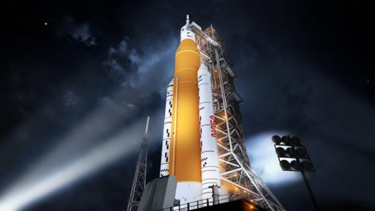

Elecciones Andalucía 2022: resultados y reacciones a la victoria de Juanma Moreno en directo
Juanma Moreno celebra su victoria en las elecciones de Andalucía | Efe
El presidente de la Junta de Andalucía y candidato del PP en las elecciones autonómicas, Juanma Moreno, ha hecho historia este domingo al lograr una mayoría absoluta en las elecciones andaluzas, mientras que el PSOE ha obtenido su peor resultado en la comunidad autónoma al lograr 31 escaños, 2 menos que en los comicios de 2018.
Sadio Mané ya es del Bayern
Sadio Mané con su selección. VISIONHAUS (VISIONHAUS/GETTY IMAGES)
Nadie pretendió ser discreto. Sadio Mané se presentó este martes en Munich para pasar el reconocimiento previo a su traspaso del Liverpool al Bayern. Un avión privado le recogió en Mallorca a primera hora de la mañana y le trasladó a la capital bávara, donde una limusina roja le recogió en la propia pista del aeródromo para trasladarle a un hotel del centro de la ciudad antes de someterse al preceptivo examen médico. Una vez superado, el delantero senegalés se dejó ver con la ropa de su nuevo club, que abonará 32 millones de euros por sus derechos, una cifra que podría llegar a los 41 millones en función de variables. Justo esa fue la cantidad que hace seis años pagó el Liverpool al Southampton para cerrar un fichaje que entonces se consideró arriesgado y que amortizó con 120 goles en 269 partidos y una completa cata de títulos: Premier League, Copa inglesa, Copa de la Liga, Champions, Supercopa de Europa y Mundial de clubs .
Continúan los problemas de la NASA con el SLS, el megacohete que nos llevará de nuevo a la Luna

El megacohete de la NASA, el SLS, durante una de las pruebas - NASA
El programa Artemisde la NASA, que pretende llevar de nuevo humanos sobre la Luna (incluidos la primera mujer y la primera persona de color astronautas), acaba de terminar una prueba crucial: el ensayo general húmedo del cohete del Sistema de Lanzamiento Espacial (SLS, por sus siglas en inglés), que transportará la cápsula Orión, donde irán alojadas las próximas tripulaciones. En concreto se trata de un test que engloba desde el montaje del enorme cohete de casi cien metros de altura sobre la plataforma de lanzamiento hasta la cuenta regresiva, aunque sin llegar a despegar.